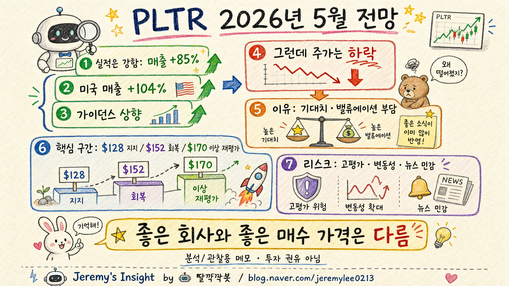

260505 팔란티어 26년 5월 주가 향후 전망 분석 보고서

핵심 결론
- 🚀 실적은 매우 강하지만, 주가는 이미 높은 기대치를 상당 부분 반영한 상태임
- ⚠️ 단기 핵심은 $128 지지 여부와 $152 회복 여부임
- 🧭 좋은 회사라는 판단과 지금 좋은 매수 구간이라는 판단은 분리해야 함
1. 현재 상황 요약
2026년 5월 5일 기준 Palantir Technologies, PLTR 주가는 장중 약 $137.42 부근에서 움직이고 있다.
최근 6개월 고점은 약 $194.17, 52주 고점은 약 $207.52로 확인된다.
즉 주가는 여전히 장기 상승 서사의 중심에 있지만, 최근에는 고점 대비 상당한 조정을 받은 구간에 있다.
최근 20거래일 흐름을 보면 $128 부근에서 저점을 만들고, $152 부근까지 반등했다가 다시 $137대로 밀린 모습이다.
2. 실적은 왜 강하다고 보는가
최근 Q1 2026 실적 관련 보도 기준으로 Palantir는 매출 성장률 85%를 기록했고, 미국 매출은 104% 성장한 것으로 알려졌다.
또한 FY2026 매출 가이던스를 상향했고, 미국 상업 매출 성장 기대치도 매우 강하게 제시했다.
이 숫자만 보면 일반적인 소프트웨어 기업의 성장률과는 다른 구간에 있다.
| 항목 | 의미 | 투자자가 봐야 할 점 |
|---|---|---|
| 매출 +85% | 성장 속도가 다시 가속 | AI 수요가 실제 매출로 연결 |
| 미국 매출 +104% | 핵심 시장 폭발적 성장 | 미국 상업·정부 수요 확인 |
| 가이던스 상향 | 경영진 자신감 | 단기 실적 모멘텀 유지 가능 |
| AIP 확산 | AI 운영체제 서사 강화 | 단순 AI 테마와 차별화 |
사업 자체만 놓고 보면 팔란티어의 방향성은 여전히 강하다.
3. 그런데 왜 주가는 빠졌는가
문제는 실적이 아니라 기대치다.
팔란티어는 이미 AI 대표주로 매우 높은 프리미엄을 받고 있다.
따라서 좋은 실적이 나와도 시장이 “이미 알고 있던 좋은 이야기”라고 판단하면 주가는 오히려 밀릴 수 있다.
이번 하락은 실적 쇼크라기보다 기대치와 밸류에이션 부담에 가까워 보인다.
| 주가 하락 원인 | 설명 |
|---|---|
| 기대치 과열 | 투자자들이 이미 매우 강한 실적을 예상 |
| 밸류에이션 부담 | 성장률이 높아도 가격이 너무 비싸면 조정 가능 |
| 차익 실현 | 실적 발표 전후 단기 매도 발생 |
| 기술주 변동성 | AI·고성장주 전체의 금리/심리 민감도 |
좋은 실적에도 주가가 빠지는 장면은 고성장주에서 자주 나온다.
4. 핵심 가격 구간
현재 관찰할 구간은 세 개다.
| 구간 | 의미 | 해석 |
|---|---|---|
| $128 전후 | 최근 6개월 저점 근처 | 깨지면 추가 조정 위험 증가 |
| $140 전후 | 현재 공방 구간 | 방향성 확인 전 애매한 구간 |
| $152 전후 | 최근 반등 고점 | 회복 시 단기 심리 개선 |
| $170 이상 | 추세 재평가 구간 | 강한 매수세 재유입 확인 필요 |
단기적으로는 $128을 지키는지가 가장 중요하다.
반대로 $152를 다시 회복하면 실적 이후 실망 매물을 어느 정도 소화했다는 신호로 볼 수 있다.
5. 향후 상승 시나리오
팔란티어가 다시 상승 흐름을 만들려면 세 가지가 필요하다.
- AIP 수요가 계속 실제 계약과 매출로 연결돼야 한다.
- 미국 상업 부문의 고성장이 유지돼야 한다.
- 고평가 논란을 이길 만큼 다음 분기 가이던스와 수주 흐름이 강해야 한다.
특히 시장은 이제 “AI를 잘한다”는 말보다 “얼마나 돈으로 바뀌고 있는가”를 본다.
팔란티어가 이 질문에 계속 숫자로 답하면 프리미엄은 유지될 수 있다.
6. 하락 시나리오와 리스크
반대로 주가가 더 흔들릴 가능성도 충분하다.
| 리스크 | 설명 | 관찰 포인트 |
|---|---|---|
| 밸류에이션 부담 | 성장률 대비 주가가 비싸다는 논란 | 실적 후에도 멀티플 압박 지속 |
| 기대치 피로 | 좋은 뉴스에도 주가 반응 둔화 | 호재 대비 주가 반응 약화 |
| 정부 계약 의존도 | 정부·국방 서사가 강함 | 민간 상업 확장 속도 중요 |
| AI 테마 조정 | AI 대표주 전체 조정 가능 | 나스닥·소프트웨어 섹터 흐름 |
| 변동성 | 고성장주 특성상 급등락 반복 | 포지션 크기 관리 필요 |
가장 위험한 착각은 “좋은 회사니까 언제 사도 된다”는 생각이다.
좋은 회사도 너무 비싸게 사면 오랜 시간 수익률이 눌릴 수 있다.
7. 투자자 관점의 대응 프레임
현재 구간은 공격적 매수보다 관찰과 분할 판단이 더 어울린다.
| 투자자 유형 | 접근 |
|---|---|
| 장기 보유자 | 실적 서사 훼손 여부 중심으로 점검 |
| 신규 진입자 | $128 지지 또는 $152 회복 확인 후 분할 접근 |
| 단기 투자자 | 실적 후 변동성 구간이라 손절 기준 필수 |
| 보수적 투자자 | 밸류에이션 부담 완화 전까지 관망 가능 |
핵심은 가격보다 조건이다.
$128을 지키고 $152를 회복하는지, 그리고 다음 뉴스가 실제 계약·매출 전망을 강화하는지가 중요하다.
최종 판단
팔란티어의 2026년 5월 상황은 사업은 강하고, 주가는 까다로운 구간이다.
매출 성장과 가이던스 상향은 분명 긍정적이지만, 시장은 이미 높은 기대치를 반영하고 있다.
따라서 향후 전망은 “무조건 상승”이 아니라 “실적 모멘텀이 고평가 부담을 계속 이길 수 있는가”의 싸움으로 보는 것이 맞다.
※ 이 글은 투자 판단을 돕기 위한 분석이며, 매수·매도 추천이 아니다.
Jeremy's Insight by 🤖 딸깍봇 https://blog.naver.com/jeremylee0213